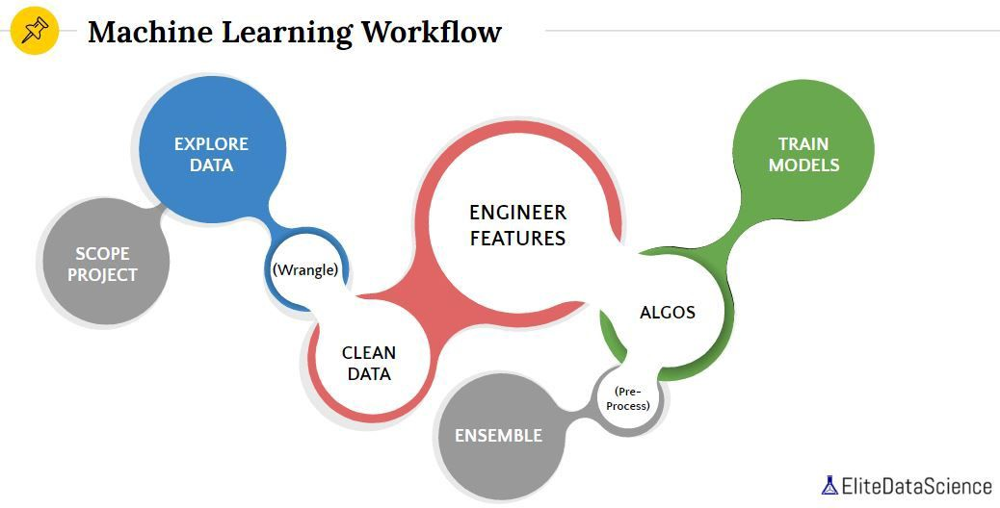

Package scaffold_doc
Introduction
The workflow of a Machine learning project. Best practices involved with developing a Machine Learning pipeline. 
Workflow
Defining the problem
This is the most crucial step in any machine learning project. We need to understand what the problem is asking for. Define what you want to predict. Describe the output of your model in detail. Check is it even possible to make predictions using a single model or not. If not, break the task into sub-tasks that are easier to understand and learn. Sub-tasks usually consist of those attributes which are essential for making the final decision. The outputs from these sub-tasks are then combined to make the final decision. Decomposing the tasks may require you to re-formulate the problem statement.
Tasks
CheckList
CheckList
Defining the problem
- Effective solution to achieve your stakeholders’ goals
- Translate the Requirement
- Define what you want to predict.
- Describe the output of your model in detail.
- Check is it even possible to make predictions using a single model or not.
- If not, break the task into sub-tasks that are easier to understand and learn.
Get Data
- The quantity is over than quality.
- Expense
- Efficiency
- aggregation / sampling / imputation / balanced
etl_qc_eda
- every attributes / bands
- null entries, missing values, invalid
- All categorical data should be encoded
- biased data
- under sampling or over sampling
- splitting
- datatime / timeseries /
Model selection
ML/DL/DNN
- Logistic Regression (or Linear Regression for regression tasks)
- Random Forests
- XGBoost
Model training
- the data is used incrementally to predict correct results.
- cross-validation
Distributed Training
Evaluation / Validation
- overfitting
- underfitting
Hyper-parameter tuning
- Grid Search
Performance
- Regression
- MSE
- RMSE
- R-squre
- Classification
- Accuracy
- Sensitivity (or True Positive Rate)
- Specificity (or True Negative Rate)
- ROC Curve
- AUC (0.5 random choice –> 1 perfect)